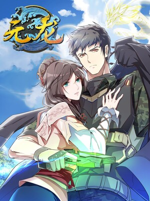
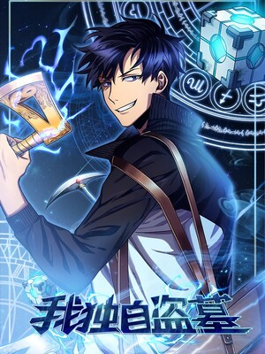

渡鸦12345
- 关注数
0
- 粉丝数
0
- 获赞数
0
- 播放数
0
- 阅读数
0


我的动态最近更多动态>
-
渡鸦12345
2003-06-23恭喜你，成为了一名老色批!!!!!
我的历史最近
鬼灭之刃
类型：动画状态：完结上次观看时间：2021-1-8大正时期，日本。心地善良的卖炭少年·炭治郎，有一天他的家人被鬼杀死了。而唯一幸存
下来的妹妹 ——祢豆子变成了鬼。被绝望的现实打垮的炭治郎，为了寻找让妹妹变回人类
的方法，决心朝着“鬼杀 队”的道路前进。人与鬼交织的悲哀的兄妹的故事，现在开始！驭灵师
类型：漫画状态：连载上次观看时间：2021-1-8这是一个漫画家降临自己笔下世界的冒险故事，某知名拖稿能手漫画家因一个神秘电话 穿
越到了自己的作品里，化身光头配角王小明，身为作者的他怎么会只甘心做个配角！ 可是
就算是造物主又真的能改变最后的命运吗？
总之就是非常可爱
类型：漫画状态：连载上次观看时间：2021-1-8擅长学习但是有点脱线的主人公由崎星空在某一天对神秘的美少女司一见钟情。 面对星空
豁出去的告白，她的回答是—— “如果你愿意和我结婚，那我就跟你交往”？! 与充满谜 团
但总之就是非常可爱的妻子的新婚生活开始了!!
伍六七之玄武国篇
类型：动画状态：即将开播上次观看时间：2021-1-8为了保护小鸡岛居民和这里平静的生活，伍六七和他的伙伴大保和小飞开启了去往玄武国的
冒险旅程， 去寻找身世的真相和解救小岛的办法，等待他们的又将是更多的未知与奇遇。
LILY
类型：漫画状态：完结上次观看时间：2021-1-8乖乖女学霸凡一琳，结识充满个性的神秘少女蓝若兮。因误会而得缘，因缘份而深交。 当
二人相识越来越久，了解越来越多时，有些情感在其中悄然变异。“我喜欢你， 只因刚好是
你”。
虚构推理
类型：漫画状态：完结上次观看时间：2021-1-8成为“妖怪”们智慧之神的少女岩永琴子对樱川九郎一见钟情，而樱川九郎居然是一个 连
“妖怪”也畏惧三分的男人！？机缘巧合下两人成为恋人，一起探索这个城市里关于妖怪的
故事。雾山五行
类型：动画状态：连载上次观看时间：2021-1-8上古时期妖兽纵横，一位神秘道人分别授予了阴阳五行的特殊能力给金木水火土五个家族来
抵抗妖兽。 他们将妖兽驱赶到神隐雾山之中，设立结界。雾山之中另有强大灵力的麒麟兽
常常吸引来那些想要提升妖力突破 结界的妖兽们，因此自愿被封印于巨阙神盾之中。火行
使者闻人翊悬为救其母私自打开了巨阙神盾，小麒麟 趁机偷溜出来，妖兽界将掀起一股腥
风血雨……风灵玉秀
类型：动画状态：连载上次观看时间：2021-1-8江湖传言，飞贼风铃儿身边忽然多了一个神秘的白发少女，出手凌厉，不少黑道高手都在她
手底下吃了 亏。人们议论纷纷，这个少女究竟是谁，她一身武功又到底是从何而来，对于
正道门派是福是祸。不过风铃儿 和那白发少女—白钰袖倒并不在乎别人对她们的看法，依
旧逍遥的游历江湖。殊不知一个巨大的阴谋正在她 们背后酝酿......
消息
对话框关闭
- 渡鸦12345
WDNMD
-
恭喜你成为了一名老色批！！！
-
今天老色批动漫网个人主页完工
-
今天开始制作老色批动漫网个人主页
筛选: | |
|---|---|
类型: |
|
地区: |
|
时间: |
|
风格: |

鬼灭之刃
收藏于:2020-1-7-
辉夜大小姐想让我告白
收藏于:2020-1-7 -
某科学的超电磁炮
收藏于:2020-1-7 -
Fate
收藏于:2020-1-7 -
Re：从零开始的异世界生活 第二季
收藏于:2020-1-7 -
关于我转生变成史莱姆这档事 第二季
收藏于:2020-1-7 
动物狂想曲 / BEASTARS 第二季
收藏于:2020-1-7-
工作细胞 第二季
收藏于:2020-1-7 -
在魔王城说晚安
收藏于:2020-1-7 -
咒术回战
收藏于:2020-1-7 -
因为太怕痛就全点防御力了
收藏于:2020-1-7 -
工作细胞
收藏于:2020-1-7 -
中二病也要谈恋爱
收藏于:2020-1-7 -
名侦探柯南
收藏于:2020-1-7 -
Love Live! 学园偶像 电影
收藏于:2020-1-7 -
总之就是非常可爱
收藏于:2020-1-7 -
异度侵入 ID:INVADED
收藏于:2020-1-7 -
公主连结Re:Dive
收藏于:2020-1-7 -
五等分的新娘∬
收藏于:2020-1-7 -
魔法少女☆伊莉雅 2WEI!
收藏于:2020-1-7 -
喜欢本大爷的竟然就你一个？
收藏于:2020-1-7 -
全员恶玉
收藏于:2020-1-7
筛选: | |
|---|---|
进度: |
|
地区: |
|
题材: |

鬼灭之刃
[完结] 共 208 话
天官赐福
更新至 圣诞-
辉夜大小姐想让我告白 ~..
更新至 212 话 
租借女友
更新至 169 话
一拳超人
更新至 181 话
幽冥诡匠
更新至 329 话
咒术回战
更新至 133 话
入间同学入魔了
更新至 185 话-
我的守护女友
更新至 180 话 
百炼成神
更新至 第674话
BEASTARS 动物狂想曲
[完结] 共 197 话
小魔头暴露啦！
更新至 077 话-
石纪元（Dr.Stone）
更新至 179 话 
总之就是非常可爱
更新至 138 话
地缚少年花子君
更新至 73 话
斗罗大陆
更新至 269（1）
航海王
更新至 999 话
五等分的新娘
[完结] 共 122 话-
关于我转生变成史莱姆这档事
更新至 78 话 
碧蓝之海
更新至 番外12-
约定的梦幻岛
更新至 184 话 -
我在皇宫当巨巨
更新至 141 话 
驭灵师
更新至 024-29
放开那个女巫
更新至 217 话
转生成为了只有乙女游戏...
更新至 034 话- 
元龙
更新至 134 话 
我们无法一起学习
[完结] 共 187 话
战国千年
更新至 133 话-
鲲吞天下
更新至 082 话 
LILY
[完结] 共 949 话-
虚构推理
更新至 41 话
伍六七之玄武国篇
为了保护小鸡岛居民和这里平静的
国创|中国大陆即将开播
生活，伍六七和他的伙伴大保和小
飞开启了去往玄武国的冒险旅程，
去寻找身世的真相和解救小岛的办
法，等待他们的又将是更多的未知与奇遇。雾山五行
上古时期妖兽纵横，一位神秘道人
国创|中国大陆更新至第3话
分别授予了阴阳五行的特殊能力给
金木水火土五个家族来抵抗妖兽。
他们将妖兽驱赶到神隐雾山之中，
设立结界。雾山之中另有强大灵力的麒麟兽常常吸引来那些想要提升妖力突破 结界的妖兽们，因此自愿被封印于巨阙神盾之中。火行使者闻人翊悬为救其母私自打开了巨阙神盾，小麒麟 趁机偷溜出来，妖兽界将掀起一股腥风血雨……风灵玉秀
江湖传言，飞贼风铃儿身边忽然多
国创|中国大陆更新至第4话
了一个神秘的白发少女，出手凌厉
，不少黑道高手都在她手底下吃了
亏。人们议论纷纷，这个少女究竟
是谁，她一身武功又到底是从何而来，对于正道门派是福是祸。不过风铃儿 和那白发少女—白钰袖倒并不在乎别人对她们的看法，依旧逍遥的游历江湖。殊不知一个巨大的阴谋正在她 们背后酝酿......鬼灭之刃
大正时期，日本。心地善良的卖炭
番剧|日本 全26话
少年·炭治郎，有一天他的家人被
鬼杀死了。而唯一幸存下来的妹妹
——祢豆子变成了鬼。被绝望的
现实打垮的炭治郎，为了寻找让妹妹变回人类的方法，决心朝着“鬼杀 队”的道路前进。人与鬼交织的悲哀的兄妹的故事，现在开始！Re：从零开始的异世界生活 第二季 后半
我一定会拯救你。在打倒了魔女教
番剧|日本连载中
大罪司教「怠惰」担当——培提其
乌斯·罗曼尼康帝之后，菜月昴和
爱蜜莉雅又得以重新开始。克服了
艰难的诀别，两人终于和解，然而这只是新一轮风波的序幕。超乎想 象的绝境危机，接踵而至的残酷现实。少年将再次直面残酷的命运。
Re：从零开始的异世界生活 第二季 前半
我一定会拯救你。在打倒了魔女教
番剧|日本全13话
大罪司教「怠惰」担当——培提其
乌斯·罗曼尼康帝之后，菜月昴 和
爱蜜莉雅又得以重新开始。克服了
艰难的诀别，两人终于和解，然而这只是新一轮风波的序幕。超 乎想象的绝境危机，接踵而至的残酷现实。少年将再次直面残酷的命运。
工作细胞
这是一个关于你自身的故事。你体
番剧|日本全14话
内的故事——。人的细胞数量，约
为37兆2千亿个。细胞们在名为身 体
的世界中，今天也精神满满、无休
无眠地在工作着。运送着氧气的红细胞，与细菌战斗的白细胞… …！这里，有着细胞们不为人知的故事。辉夜大小姐想让我告白？～天才们的恋爱头脑战～
秀才所聚集的名校·秀知院学园，
番剧|日本共12话
在那里的学生会相遇的副会长·
四宫辉夜与会长·白银御行，是 任
何人都认为适合对方的两个天才，
原以为他们马上就能交往了，但他们因为自尊心超强一直没能 告白！！在“如何让对方告白”的恋爱头脑战中绞尽脑汁的2人，那种罕见的才智热暴走！！已经 无法控制了！！恋爱使天才变成笨蛋！！新感觉“斗智”？爱情喜剧、再次开战！！关于我转生变成史莱姆这档事 第二季
主人公利姆露与仰慕他而聚集的众
番剧|日本连载中
多魔物们所建立的国家「鸠拉·特
恩佩斯特国」，经由与邻国的 协议
及交易，让「人类与魔物共同漫步
的国家」这一温柔的理想逐步成形。利姆露作为曾是人类 的史莱姆当然拥有「对人类的好意」……但这个世界中却存在着明确的「对魔物的敌意」。当这 不合理的现实摆在眼前时，利姆露将做出选择。为了「什么都不想失去」——万众期待的转生喜剧 突入暴风的新章！
埃罗芒阿老师
高中生兼小说作家的“和泉正宗”
番剧|日本全12话
（笔名：和泉征宗）有个家里蹲的
妹妹“和泉纱雾”。一年前才
成为家人的她，却完全不走出居室
，并也用力踩踏地板，要我帮她准备食物。为了这段称不上 “兄妹”的关系，正宗得想个办法让她自己走出居室才行，因为两人已是目前仅存能相依为命 的“家人”……至于正宗的搭挡插画家“煽情漫画老师”，是个能够画出非常棒煽情图的可靠 伙伴。虽然双方并没见过面，但我一直很感谢他！只是在某一天，正宗突然发现到一个冲击事 实，那就是“煽情漫画老师”其实就是纱雾！？
小林家的龙女仆
在单身的辛苦OL小林身边突然出现
番剧|日本全14话
的女仆装束的美少女托尔。长着角
和尾巴的她的身姿正是所 谓的龙娘
。在醉酒的小林邀请下说要到家里
去的托尔，鬼使神差地开始以小林家女仆的身份工 作……！？“女仆”+“龙”=“女仆龙”有着笨手笨脚的可爱之处！龙娘与人类之间基本上很 温暖、偶尔有些黑暗的异种族间交流喜剧！！青春猪头少年不会梦到兔女郎学姐
青春期症候群——这是一种只发生
番剧|日本全13话
在易敏感和不稳定的青春期的、不
可思议的现象。例如， 在梓川咲太
面前出现的野生兔女郎。她的真实
身份是高中高年级学生，明星活动休止的 女演员樱岛麻衣。她迷人的身姿，不知为何在周围的人眼里看不出来。咲太决定解开这 一谜题。在与麻衣一起度过的时间里，咲太知道了她秘密的想法……女主人公们一个接一 个地出现在咲太的周围，她们都有着“青春期症候群”。在天空和大海都很闪耀的小镇 上，开始了令人激动的故事。紫罗兰永恒花园
某个大陆的、某个时代。大陆南北
番剧|日本 全14话
分割的战争结束了，世界走向了和
平。在战争中作为军人 的薇尔莉特
•伊芙加登，怀抱着对她来说无比重
要之人留下的“话语”，离开军队来到了大 港口城市。踊跃的人群在排列着煤气灯的街道马路上来来往往地穿梭着。薇尔莉特在街道上 找到了“代写书信”的工作。那是根据委托人的想法来组织出相应语言的工作。她直面委托人 、触碰着他们内心深处的坦率感情。与此同时，薇尔莉特在记录书信时，渐渐明白那“话语”的含义。某科学的超电磁炮T
有 230 万人口，其中八成人口为学
番剧|日本全25话
生的「学园都市」，是比其他地区
科技更为先进，并从 事「超能力开
发」的特殊地区。而整座学园都市
中仅有七人的等级 5 超能力者之一御坂 美琴，由于她的能力与个性使然，因而被卷入了学园都市中所发生的种种事件……
紫罗兰永恒花园外传：永远与自动手记人偶
某个大陆的、某个时代。大陆南北
番剧|日本2020年1月10日上映
分割的战争结束了，世界走向了和
平。在战争中作为 军人的薇尔莉特
•伊芙加登，怀抱着对她来说无比重
要之人留下的“话语”，离开军队来 到了大港口城市。踊跃的人群在排列着煤气灯的街道马路上来来往往地穿梭着。薇尔莉特 在街道上找到了“代写书 信”的工作。那是根据委托人的想法来组织出相应语言的工作。 她直面委托人、触碰着他们内心深处的坦率感情。与此同时，薇尔莉特在记录书信时，渐渐 明白那“话语”的含义...Re：从零开始的异世界生活
在异世界陷入迷茫的普通高中生菜
番剧|日本全25话
月昴，邂逅了一位银发的美少女。
但想助她一臂之力的昴 ，却一次次
地遭遇敌袭，背叛、暴力，甚至是
死亡……“死亡重置”——无力的少年拥有的 唯一能力，能将死后时间倒转回一开始。使用了这般力量，便会失去过去的回忆，可为了守护 最重要的人们，昴必须抗争到底。“即使你忘却了我，我也不会遗忘你。”冰菓
在众多将要展开「玫瑰色」生活的
番剧|日本全22话
高中生之中，本作的男主角折木奉
太郎却是一个「灰色」的 节能主义
者。凡是没必要的事就不做，因为
不想后悔，被人说是疏离、厌世也无所谓，因为这 就是他的作风。这样的折木奉太郎，却因为姐姐的命令而进入了濒临废社的「古籍研究社」。研 究社虽然好不容易招到了四名新社员，但却又卷入了四十五年前社长突然肄业的谜团之中。社长 当年留下的名为「冰菓」的社刊，内里究竟隐藏了什么神秘的讯息呢……刀剑神域 爱丽丝篇 异界战争
桐人、尤吉欧、爱丽丝。距离两名
番剧|日本 全13话
修剑士和一名整合骑士打败了最高
祭司阿多米尼斯多雷特已过 去了半
年。结束了战斗，爱丽丝在故乡卢
利特村生活。在她的身旁，是失去了挚友，自己也失去了 手臂和心的桐人。献身般支撑着他的爱丽丝，丝毫没有保留像以前一样作为骑士的心。“告诉我， 桐人……我究竟该怎么办？”然而，通往将Underworld全境引向悲剧的“最终压力测试”的倒计 时，却毫不留情地推进着。仿佛与之相呼应一般，在“黑暗领域”的深处，暗黑神贝库达复活了。 他率领暗黑帝国的军队，为了得到“光之巫女”，开始向“人界”进攻。指挥“人界”军...
OVERLORD Ⅲ
时间为2138年。曾卷起一大风潮的
番剧|日本全13话
虚拟现实体感型网络游戏《YGG
DRASIL》即将迎来停服。玩家 飞鼠
在曾经以同伴和荣华自傲的根据地
纳萨力克地下大坟墓，独自一人安静等待着那一刻。但是 ，不料发生了“过了结束时间却还没有登出”的异常事态。NPC们开始以自己的意志行动，不止如 此，纳萨力克之外展开了从未见过的异世界。飞鼠为了寻找过去的同伴，以公会名安兹·乌尔·恭 自称，决定在异世界扬名立万。他与宣誓绝对忠诚的部下一同，向新的地域进军。
Re：从零开始的异世界生活 Memory Snow(雪之回忆)
昴等人打倒了诅咒的元凶——魔兽
番剧|日本全1话
沃尔加姆，拯救了阿拉姆村的孩子
们。终于到来的安稳并未持 续很久
，昴就瞒着所有人前去挑战某个极
秘任务。尽管昴做了变装，但很快就被以佩特拉为首的 村里的孩子们识破了真实身份。开始后5秒就曝光的这一任务，是事前调查和艾米莉亚约会的路线……。
因为太怕痛就全点防御力了
主角本条枫在好友白峰理沙推荐下
番剧|日本全12话
开始游玩游戏“NewWorld Online
”，创建了名为“梅普露”的角色
。然而作为游戏初学者，梅普露选
择了不受欢迎的大盾当武器，同时因为怕痛而把所有状态点加到防御 力的极限加点。 虽然在游戏初期因此吃了不少苦，但因为梅普露无视规则又异想天开的行动方式学到 各种特殊技能，更以其奇特方式通关地城获得了罕见装备，令防御进一步提升。 最强初学者化身“移动 要塞”在游戏中尽情胡闹的冒险故事。青春猪头少年不会梦到怀梦美少女
居住在天空与海洋辉映的城镇“藤
番剧|日本 全1话
泽”的梓川咲太，就读高中二年级
。他与既是学姐又是恋人的樱岛 麻
衣所度过的令人雀跃的日常，随着
初恋对象牧之原翔子的出现而改变。不知为何，存在着“中学生 ”和“大人”两个翔子。出于无奈开始和翔子住在一起的咲太，受到“大人翔子”的捉弄，和麻衣的 关系也变得尴尬。此时，“中学生翔子”身患重病的事实被发现，咲太的伤痕开始隐隐作痛——。
某科学的超电磁炮
故事发生在面积占据东京都的三分
番剧|日本全24话
之一，居住着230万名人口且其中八
成人口是学生的巨大都市“学 园都
市”。学园都市的所有学生均会接
受超能力开发，借由药物、催眠术与通电刺激等方式取得超 能力。能力者以范围和威力分为LV0至LV5。主角御坂美琴是学园都市中仅七位LV5（超能力者）的其 中一人，排行第三。她是拥有操纵电击能力的“电击使”，站在电击能力的顶峰，因而被称为“超电 磁炮”。本作不但通过美琴的视角来描绘学园都市的平常而不平凡的日常生活，也叙述了学园都市秘 密进行非人道性质的实验，从而使大家对于本作及本篇《魔法禁书目录》的背...大理寺日志
在唐朝武明空统治时期，以主管全
国创|中国全12话
国大案要案的大理寺为舞台，讲述
大理寺众人，在白猫少卿李饼的 带
领下，展开各种惊心动魄的破案冒
险，向命运反抗，坚守自己内心正义的故事。非人哉
坐拥数百万粉丝，微博阅读量超10
国创|中国全48话
亿的人气国漫动画化，脑洞大开，
笑点密集，萌点爆棚 ，展现中国神
仙妖怪当代生活的爆笑日常。
凡人修仙传
平凡少年韩立出生贫困，为了让家
国创|中国连载中
人过上更好的生活，自愿前去七玄
门参加入门考核，最终被墨大夫 收
入门下。墨大夫一开始对韩立悉心
培养、传授医术，让韩立对他非常感激，但随着一同入门的弟 子张铁失踪，韩立才发现了墨大夫的真面目。墨大夫试图夺舍韩立，最终却被韩立反杀。通过墨大 夫的遗书韩立得知了一个全新世界：修仙界的存在。在帮助七玄门抵御外敌之后，韩立离开了七玄 门，前去墨大夫的家中寻找暖阳宝玉解毒，并帮助墨家人打败了敌人。通过墨大夫之女墨彩环的口中 得知太南小会地址，韩立为追寻修仙人的足迹决定前往太南小会，拜别家人后，...

鬼灭之刃
卖炭少年·炭治郎，他那平凡而幸
日本[完结] 共 208 话
福的日常生活，在家人遭到恶鬼袭
击的那一天发生剧变 。母亲与四个
弟妹惨遭杀害，而与他一起生还的
妹妹：祢豆子亦异变成凶暴的鬼。 在猎 鬼人的指引下，立志成为猎鬼人的炭治郎与变成鬼却尚存理智的祢豆子二人踏上了旅程。 通过艰苦的剑术修行与赌命试炼，炭治郎成为了鬼猎人组织“鬼杀队”的一员。 为了让 妹妹祢豆子变回人类，为了讨伐杀害家人的恶鬼，为了斩断悲伤的连锁，少年与鬼的战斗不曾停歇。
辉夜大小姐想让我告白
“先告白的人在恋爱当中是输家。
日本更新至 212 话
” 家庭背景与人品都很棒，一大群
有前途的秀才所聚集 的秀知院学园
。在那里的学生会相遇的副会长·
四宫辉夜与会长·白银御行原本应该是彼 此受到了对方吸引，但想不到都过半年了却仍然什么事情也没发生。最麻烦的是这两个自 尊心超强、无法坦率的家伙，居然开始想着要“设法让对方向自己告白”？ 直到恋情明 朗之前都会很欢乐的故事，充满新鲜感的“斗智”爱情喜剧，就此开战。
租借女友
被交往一个月的女友甩掉的男主木
日本更新至 169 话
之下和也，因为寂寞打开了一个叫
“Diamond”的网站 ，于是认识了
一位叫水原千鹤的女生……一拳超人
主人公埼玉原本是一名整日奔波于
日本更新至 181 话
求职的普通人。三年前的一天偶然
遇到了要对淘气少年下 杀手的异变
螃蟹人后，回忆起年少时“想要成
为英雄”的梦想，最终拼尽全力救下了淘气少 年。重拾对于成为英雄的兴趣之后，通过拼命锻炼，埼玉终于脱胎换骨获得了最强的力量， 但同时失去了头发成了光头，似乎还失去了某些感情。
幽冥诡匠
主人公陈小狗与父亲陈老狗降妖捉
中国更新至 329 话
怪，盗墓憋宝，去经历一场场诡异
离奇的灵异事件！
咒术回战
东京都立咒术高等专门学校（全一
日本更新至 133 话
册）已更新在第1话前【此漫画的翻
译由版权方提供】拥 有超人般身体
能力的男子高中生虎杖悠仁的黑暗
幻想故事。因为某种理由，想要每天17点之 前回家的虎杖悠仁来到了不强制出席的灵异现象研究会，享受着悠闲的活动。这样的某一天 ，来学校寻找被封印的诅咒之物的青年伏黑恵出现于虎杖的面前。
BEASTARS 动物狂想曲
在全宿舍制的却里顿学园里，羊驼
日本[完结] 共 197 话
提姆被什么兽给吃了。在肉食兽和
草食兽共存的世界中， 这是最大的
禁忌，也是无法超越的种族的墙壁
……这是大灰狼雷格西（17岁）和各种各样 的动物交织在一起，激烈的、悲伤的青春群像剧！！
小魔头暴露啦！
为了在江湖上活下去，魔教教主之
中国更新至 077 话
子于仁杰奉命混入只招收名门正派
弟子的“正道书院”， 目标是获得
能够洗白魔教身份的《好人证》。
此行凶险异常，一旦暴露魔教身份必将被无 数正道侠客当场击杀。可在报到当天于仁杰就尴尬的发现自己的个人信息早就被人调查的 干干净净，为了隐藏身份他终于选择了……穿上女装。凶险又爆笑的校园生活即将展开！
石纪元（Dr.Stone）
那一天，世界上所有的人类都…
日本更新至 179 话
…变成了石头！ 告白未果的热血少
年大木大树和怪异度1 00亿%的理科
天才千空 在灾难中生存下来的唯二
两人 将如何开辟这石之纪元？ 原作:稻 垣理一郎（光速蒙面侠原作） 作画：BOICHI(最强不良传说作者) 空前的SF冒险故事即将开幕!!总之就是非常可爱
擅长学习但是有点脱线的主人公由
日本更新至 138 话
崎星空在某一天对神秘的美少女司
一见钟情。 面对星空 豁出去的告白
，她的回答是—— “如果你愿意和
我结婚，那我就跟你交往”？! 与充满谜 团但总之就是非常可爱的妻子的新婚生活开始了!!地缚少年花子君
海鸥学园流传着七大不可思议的奇
日本更新至 73 话
妙传言。旧校舍3楼的女生厕所的第
3个隔间里有一位名为 “花子”的幽
灵，传说那位“花子”可以实现到
访者的任何愿望。而八寻宁宁为了实现自己 的愿望，将可能性都寄托在了这个学校的怪谈上…新锐作家あいだいろ为您奉上的温馨厕所喜剧！斗罗大陆
唐三因偷学绝门派武功，被逼无奈
中国更新至 269（1）
怀揣着一身绝技和未完成的心愿跳
崖明志，不料却带着 前世记忆转世
重生。还是小正太的他凭借天生双
武魂先天满魄力的天赋走进了诺丁学院， 遇到了野蛮可爱的萝莉小舞，同时也发现了自己的身世之谜。前世心愿今生能实现吗？
航海王
拥有财富、名声、权力、这世界上
日本更新至 999 话
的一切的男人 “海盗王”高路德·
罗杰，在临死之前说了 一句话，让
全世界的人都涌向了大海。“想要
我的财宝吗？想要的话，就去拿吧，我把世 界上的一切都放在了那里！”，这个世界迎来了“大海盗时代”。五等分的新娘
家境清贫的男主上杉风太郎找到了
日本[完结] 共 122 话
一份非常好的家庭教师兼职，却不
曾想到辅导的学生竟然 是自己的同
级生，而且是性格各异的五胞胎姐
妹！第一次上课竟然还被下药？面对面临留 级的问题五姐妹，看风太郎如何各个击破。风太郎和中野五姐妹的校园恋爱喜剧即将开始解锁……驭灵师
这是一个漫画家降临自己笔下世界
中国更新至 024-29
的冒险故事，某知名拖稿能手漫画
家因一个神秘电话 穿越到了自己的
作品里，化身光头配角王小明，身
为作者的他怎么会只甘心做个配角！ 可是就算是造物主又真的能改变最后的命运吗？
转生成为了只有乙女游戏
17岁的女子高中生不幸去世，却转
日本更新至 034 话
生到了自己生前曾玩过的一部乙女
游戏中。转生的 她并不是主角，而
是破坏主角爱情的反派……
我们无法一起学习
家境清寒的优秀高中生唯我成幸，为
日本[完结] 共 187 话
了获得免缴学费的大学“特别VIP推
荐资格”， 必须要让同学绪方理珠
、古桥文乃和武元润香考上与她们
不擅长的科目领域的志愿 学校，展开了这充满热血与浪漫气氛校园生活。LILY
乖乖女学霸凡一琳，结识充满个性
中国[完结] 共 949 话
的神秘少女蓝若兮。因误会而得缘
，因缘份而深交。 当二人相识越来
越久，了解越来越多时，有些情感
在其中悄然变异。”我喜欢你，只因刚好是你。“虚构推理
成为“妖怪”们智慧之神的少女岩
日本更新至 41 话
永琴子对樱川九郎一见钟情，而樱
川九郎居然是一个 连“妖怪”也畏
惧三分的男人！？机缘巧合下两人
成为恋人，一起探索这个城市里关于妖怪的故事。
步天歌
（架空朝代）大陈年间，菁贵妃霞
中国更新至 50 话
光中诞下双生龙凤胎。皇子生来眉
间一颗朱砂痣，皇女天生六指 。祥
瑞与不祥同时出现，令同胞双生的
二人迎来截然不同的命运，被迫与至亲分离。天劫将至， 自出生便相离的他们是否能重逢？彼此又以何种方式与天命相争？- 
我独自盗墓
2025年世界各处惊现古墓，获得墓
韩国更新至 141 话
中“宝物”之人便能获得先人的异
能。全世界为获得宝物而 疯狂。无
往不利盗墓者徐浩钧，在一次任务
中落入陷阱，不幸丧命。然而他带着前世的记忆， 回到了一切开始的地方。虽然失去了宝物，却获得了“系统”。这是重启的新生，还是命运 的捉弄。在系统加持下，这一世徐浩钧能否告别蝼蚁的人生，登上王之宝座？ 我是蜘蛛又怎样？
一阵剧痛带走了少女的意识，醒来
日本更新至 55 话
时，她已经身处一个打怪升级的异
世界。而她本人，则是一 只蜘蛛怪
……
怎么办！我穿越成了最弱小野怪
《天青》是一款运营十年的网络游
中国更新至 假条
戏，而我这个开服就在的十年老玩
家也收到了游戏送给 我的一个大礼
包！就在我点开之后，我竟然……
我竟然穿越成了游戏中最弱的小野怪？？